في هذا الشرح بنتعرف على كيفية تثبيت إضافات الترجمة وحل المشاكل الشائعة مثل تأخير أو تقديم الترجمة.
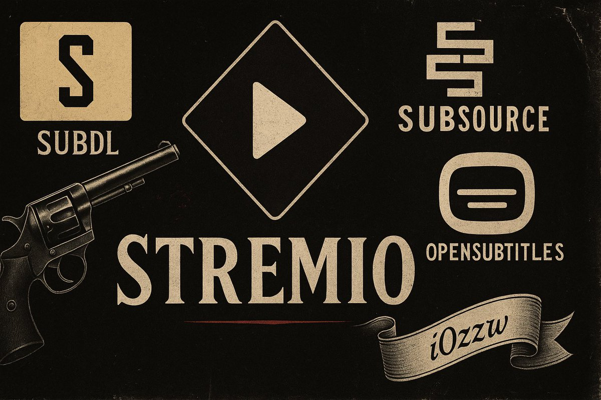
أهم خطوة هي اختيار مصدر الفيلم المناسب. بعض المصادر تعتمد على صيغ متعددة، والأفضل هو مطابقة صيغة الفيلم مع صيغة الترجمة لضمان الوزن:
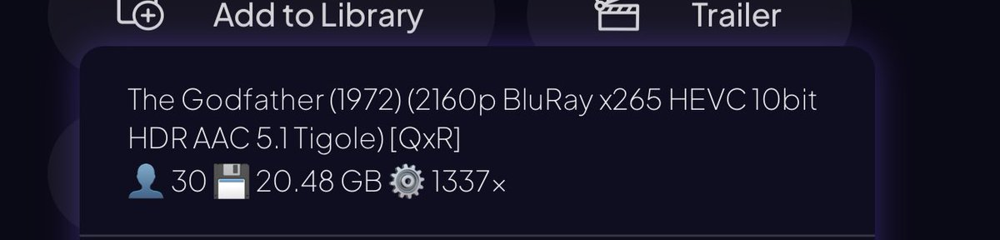
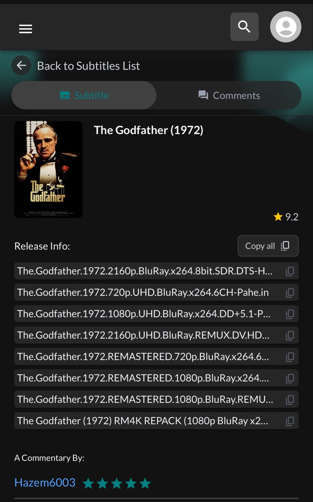
يمكنك استخدام مشغل خارجي مثل VLC، حيث يمكنك ببساطة سحب ملف الترجمة وإسقاطه فوق الفيلم ليتم تشغيله مباشرة.
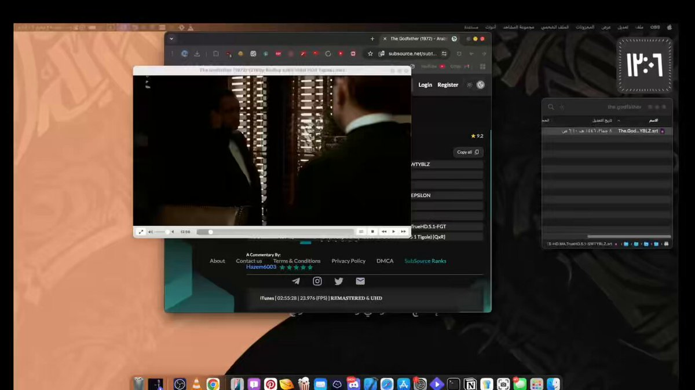
كلما زادت إضافات الترجمة لديك، زادت خياراتك لتغيير الترجمة بسهولة.
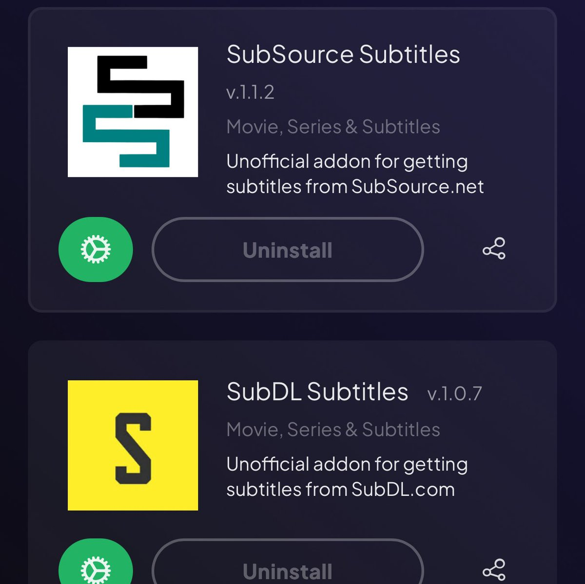
الرابط: تثبيت الإضافة
اختر اللغة العربية ثم install.
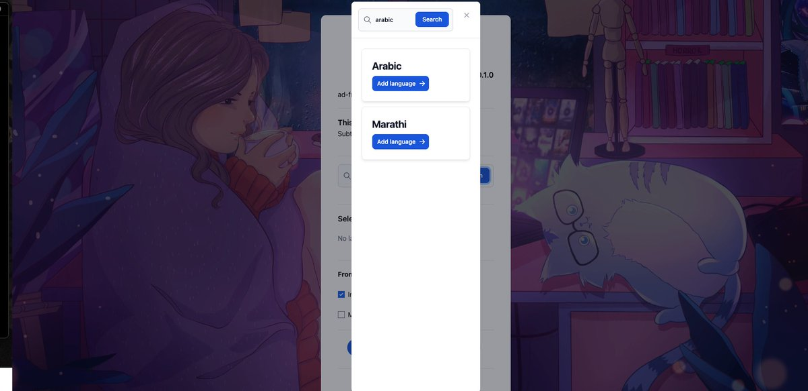
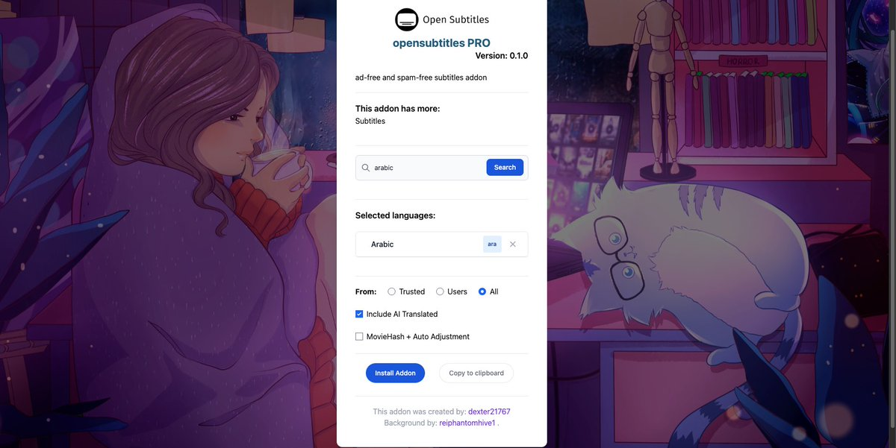
الرابط: تثبيت الإضافة
اختر اللغة العربية ثم install.
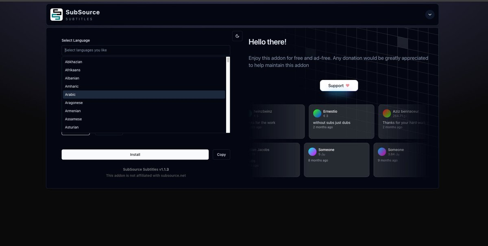
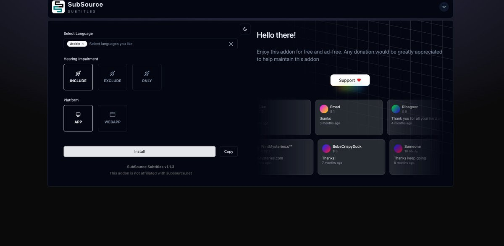
الرابط: تثبيت الإضافة
الطريقة: قم بإنشاء حساب في موقع subDL، ثم اذهب لصفحة الإضافة واضغط على get api، انسخ الكود وألصقه في الإضافة مع اختيار اللغة العربية.
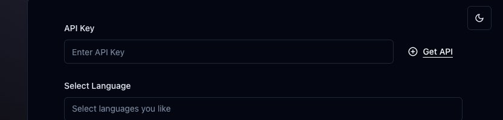
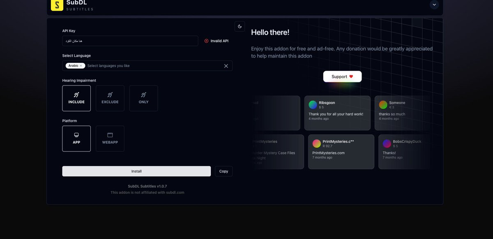
يمكنك تقديم أو تأخير الترجمة يدوياً أثناء المشاهدة من خلال إعدادات المشغل (مشغل stremio الرسمي).
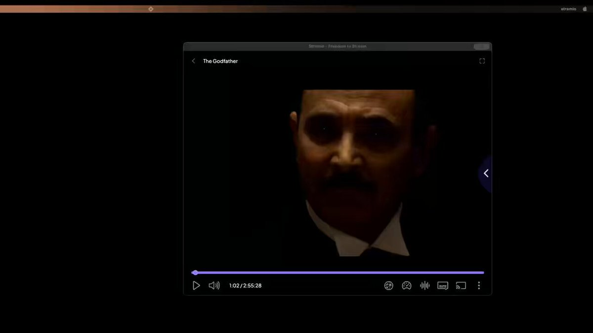